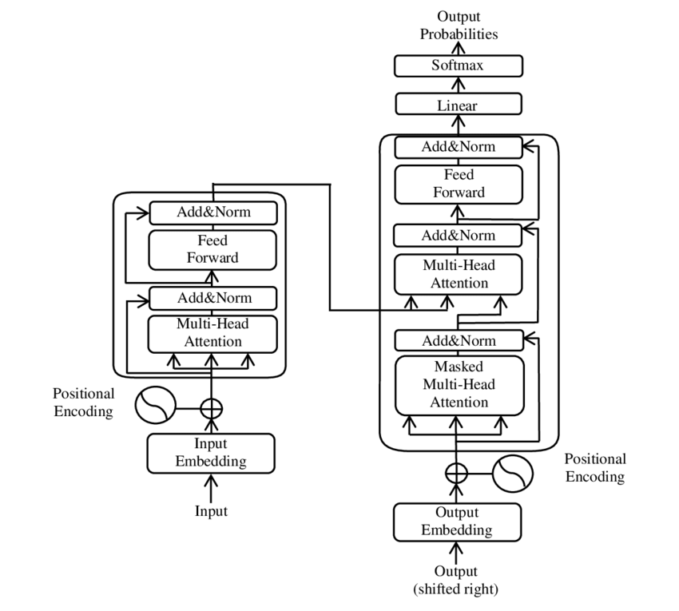

Herramientas prácticas para el trabajo docente (uso crítico y situado)
Herramientas prácticas para el trabajo docente
Uso crítico y situado de IA como apoyo (no reemplazo) del criterio profesional.
marco teórico oportunidades y límites resguardos prompting básico
Al finalizar, podrás:
Si tu taller dura 60 min: principios (8), marco teórico (18), resguardos (10), prompting (14), actividad (7), cierre (3).
Idea fuerza: la IA acelera el primer borrador; tú defines el producto final.
Regla práctica: si no lo escribirías en un correo institucional, no lo pegues en un prompt.
En este taller, IA refiere a técnicas que permiten a computadores realizar tareas que solemos llamar “inteligentes”:
Idea clave: la IA no es una “mente”. Produce resultados probabilísticos a partir de patrones aprendidos desde datos.
En este taller trabajamos principalmente con IA generativa para texto, como apoyo al juicio pedagógico.
Aprendizaje automático (machine learning): modelos que ajustan parámetros para reducir error usando muchos ejemplos.
No “comprende” como una persona: optimiza patrones estadísticos que funcionan bien en promedio.
Un modelo de lenguaje aprende a producir texto coherente prediciendo el “siguiente fragmento” más probable dado un contexto.
Idea clave: un LLM es un “completador de texto” muy sofisticado, guiable por instrucciones (prompts).
Como el objetivo es coherencia (no verdad), el modelo puede:
Regla práctica: usar IA para borradores y alternativas; verificar lo factual y decidir pedagógicamente.
Los modelos modernos de lenguaje usan arquitectura Transformer (2017), basada en auto-atención: pondera qué partes del texto son más relevantes para producir la salida.
Atención mejora coherencia y contexto; no garantiza verdad.
Buen uso: borradores + alternativas + organización. Riesgo: delegar criterio o copiar sin revisar.
Uso situado: acuerdos institucionales, propósito pedagógico y revisión profesional.
No ingresar datos sensibles o identificatorios:
Si necesitas contexto real, anonimiza: “estudiante A / estudiante B” y describe sin identificar.
Cuando la IA entregue algo “factual” (definiciones, cifras, normativa, historia):
La IA ayuda a redactar; la validación sigue siendo responsabilidad profesional.
Si el modelo responde por probabilidad, el prompt funciona como consigna:
Un buen prompt se parece a una buena consigna de aula: clara, con criterios y con límites.
Si falta información, el prompt debe pedir preguntas antes de asumir.
Actúa como [ROL]. Necesito [OBJETIVO] para [CURSO/NIVEL] sobre [TEMA].
Contexto: OA o propósito, tiempo disponible, recursos, características del grupo
(sin datos identificatorios).
Formato: entrega en [tabla/bullets] con secciones [inicio-desarrollo-cierre], e incluye:
- 1 evaluación formativa breve
- 2 apoyos DUA (acceso y participación)
Criterios: lenguaje claro, actividades observables, coherencia con OA.
Restricciones: no inventes datos; si falta info, pregunta antes de asumir.Iteración 1: pedir un borrador funcional
Iteración 2: ajustar a contexto (tiempo, recursos, nivel)
Iteración 3: pedir mejoras: evaluación, adaptaciones, instrucciones
En parejas o tríos, elijan una tarea:
Producto esperado: 1 prompt bien escrito + 1 salida revisada (borrador mejorado).